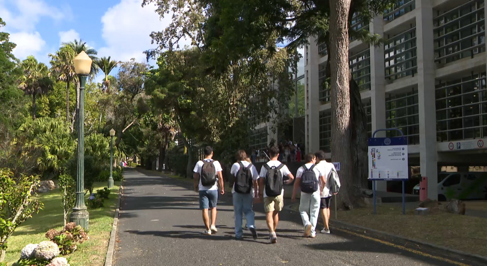

e-Saúde
Desenvolvimento de plataformas digitais para gestão de saúde, telesaúde e monitorização remota de pacientes nas ilhas.
Uma parceria inovadora entre a Universidade dos Açores e instituições de saúde regionais, dedicada à investigação clínica de excelência, ao ensino de qualidade e à melhoria dos cuidados de saúde nas ilhas.


Desenvolvendo soluções inovadoras para os desafios da saúde regional e global
Desenvolvimento de plataformas digitais para gestão de saúde, telesaúde e monitorização remota de pacientes nas ilhas.
Aplicação de machine learning e análise preditiva para diagnóstico precoce e otimização de processos clínicos.
Soluções inovadoras de teleconsulta para populações insulares e áreas remotas, reduzindo barreiras geográficas.
Estudos de prevalência de doenças e fatores de risco específicos das populações insulares.
Promoção da saúde e desenvolvimento de intervenções comunitárias adaptadas à realidade açoriana.
Acompanhe as últimas novidades em saúde e tecnologia.
A carregar notícias...
Colaboração institucional para excelência em saúde e investigação
+ várias outras instituições colaboradoras
Junte-se a nós na construção do futuro da saúde
Programas de estágio em investigação clínica e áreas tecnológicas de saúde.
Oportunidades de participação em projetos inovadores financiados por programas de saúde.
Temas de investigação para mestrados e doutoramentos nas áreas da saúde.
Bolsas de investigação apoiando projetos de excelência em saúde e inovação biomédica.
Distribuíção de oportunidades em curso nos Açores
Fale connosco. Estamos aqui para ajudar e esclarecer qualquer dúvida.
Envie-nos um email, ligue ou preencha o formulário para saber como o CACA pode apoiar a sua investigação ou colaboração.
Pode contactar-nos a qualquer momento
A nossa equipa de suporte está disponível para esclarecer qualquer dúvida ou questão que possa ter.
Valorizamos a colaboração e estamos sempre abertos a novas parcerias. O seu contributo é essencial para o futuro do CACA.
Para questões relacionadas com media ou imprensa, contacte-nos através de geral@caca.uac.pt.
Mantenha-se atualizado sobre as nossas atividades.
O CACA organiza diversos congressos, formações e encontros ao longo do ano em várias ilhas, visando a promoção do conhecimento científico em rede.
Explore no mapa os próximos eventos agendados.